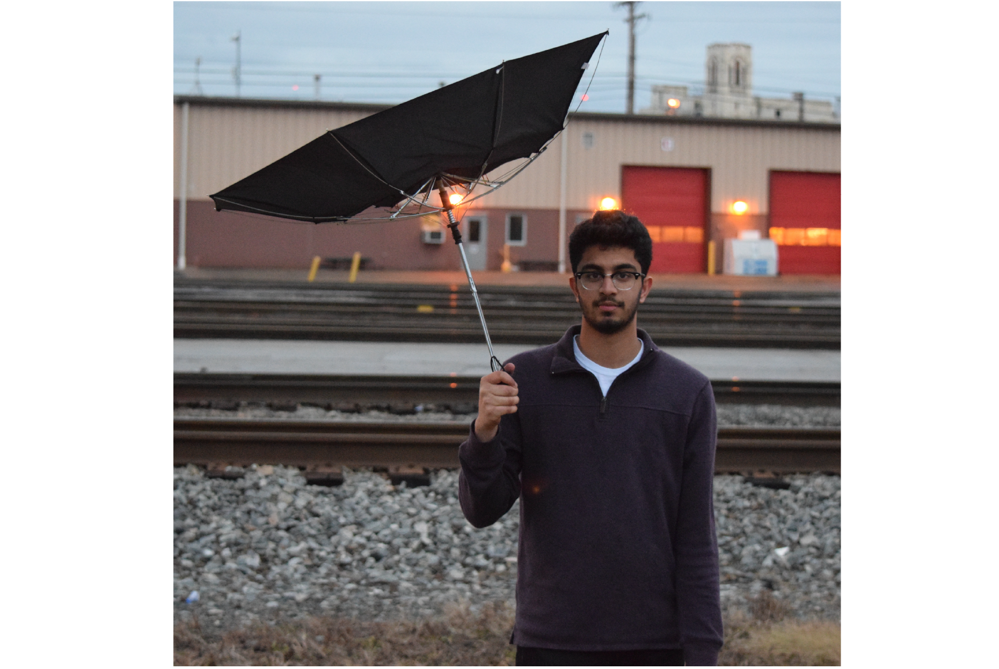

If you are reading this, hi.
If you are reading this, hi.
If you are reading this, hi.
I was born and raised in Cincinnati, Ohio. Growing up, I
loved to play tennis and would spend hours and hours
honing my abilities. Off the court, my mom spent countless,
thankless hours driving me to and from piano lessons, for
which I am forever grateful.
If you are reading this, hi.
I graduated from Indian Hill High School in 2016 and now
study at the University of Virginia as a Jefferson Scholar.
Perhaps the most beautiful town in the country, I have
learned to love Charlottesville and now consider it my
home. I am in my second year of study and I’m pursuing
a 3 + 1 Bachelors in Computer Science and Masters in
Computer Science Program. I have many academic
interests and I find that computer science is a tool that
allows me to interplay my every interest, weaving incredibly
interesting projects and leading to unbelievable connections.